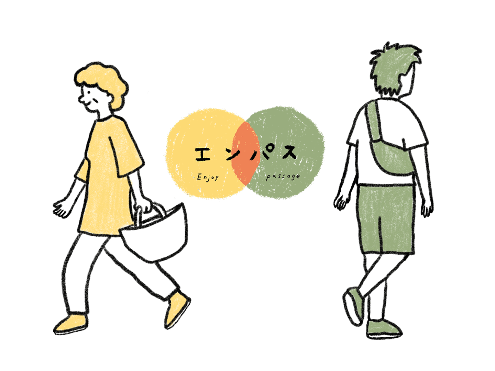

すれ違いで新しい出会いを楽しむプロジェクト「エンパス」
「エンパス」は、すれ違いを通じて新たな出会いや情報を提供するアプリです。 日常の中で偶然の出会いを楽しみ、地域の情報を交換し合うことで、生活に新たな発見と喜びをもたらします。
アプリの特徴
- すれ違い時の自動情報交換
- 地元商店街で使えるポイントシステム
- 地域ニュースやアート情報の共有
使い方
「エンパス」をダウンロードしてアカウントを作成し、アプリを起動して歩くだけで、新しい出会いや情報が手に入ります。
未来のビジョン
「エンパス」は、地域のつながりを強化し、コミュニティの活性化を目指しています。すれ違いを通じて、新しい出会いや情報を楽しみましょう。